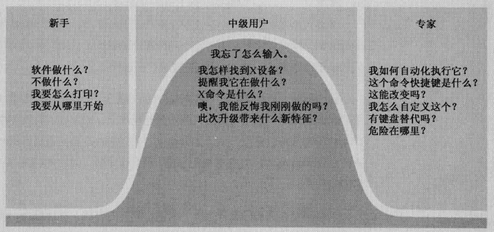

为中级用户优化设计
永久的中级用户
大多数用户即非新手又非专家，属于中级用户。

人们愿意为值得的事情付出努力。至于值不值得，用户说了算，同这一功能执行起来技术难度有多高没有关系，完全取决于用户的目标。
扭转界面
付出与回报要相称
用户只有获得充分的回报，才会付出相应的努力。
如果在应用中添加复杂的功能，要想让用户忍受复杂的操作，结果必须有足够的吸引力。
组织界面的扭转
按照3个原则对界面中的部件和显示器进行整理。
- 使用频率
- 转换程度（指某一功能或命令引发正在处理的界面或者文档、信息突然发生变化的程度，最好隐藏在界面深处。）
- 风险承担程度（指不可更改的功能 或者更改后会产生危险后果的功能）
设计人员还需要提供方便用户使用的快捷方式，配合中级用户的提升，也是专家用户的必备功能。
为三层用户设计
- 迅速轻松地将新手培养成中级用户
- 不要在中级用户成长为专家用户的过程中设置障碍
- 最重要的是，保证永久的中级用户在技术范围的中段探索时有愉快的体验
新手想要什么
将用户想象成非常聪明但很忙碌的人。
一个新手必须迅速掌握程序的概念和范围，不然他可能就会彻底放弃；而新手一旦成为中级用户，程序提供的帮助会妨碍用户，所以无论提供什么样的额外帮助，都不应该在界面中固定下来。
新手不需要参考消息，他们需要概括性的信息，比如一次全局的界面导游。
好的界面设计，不管何种平台都应该能通过导航和功能使用户迅速熟悉产品，并获得舒适的产品体验。
专家想要什么
对经常使用的工具栏，要求能够快速访问，专家甚至需要所有功能的快捷方式。
应在专业产品上针对专家用户进行设计。
永久的中级用户需要什么
永久中级用户需要快速进入最经常使用的工具。工具提示是适合中级用户最好的习惯用法。
永久中级用户知道如何使用参考材料，只要不是必须一次解决所有问题，他们就有深入学习和研究的动机。这意味着在线帮助 是永久中级用户的极佳工具，他们通过索引使用帮助 ，因此索引必须设计得十分全面。
永久中级用户知道高级功能在哪，即使他们用不到，也不知道如何使用。因为软件具有这些高级特性的事实让中级用户感到放心，让他们确信投资购买这个程序是正确的选择。
必须将你大部分的才智、时间和资源为大部分用户，即永久的中级用户而设计，为其提供最好的交互。